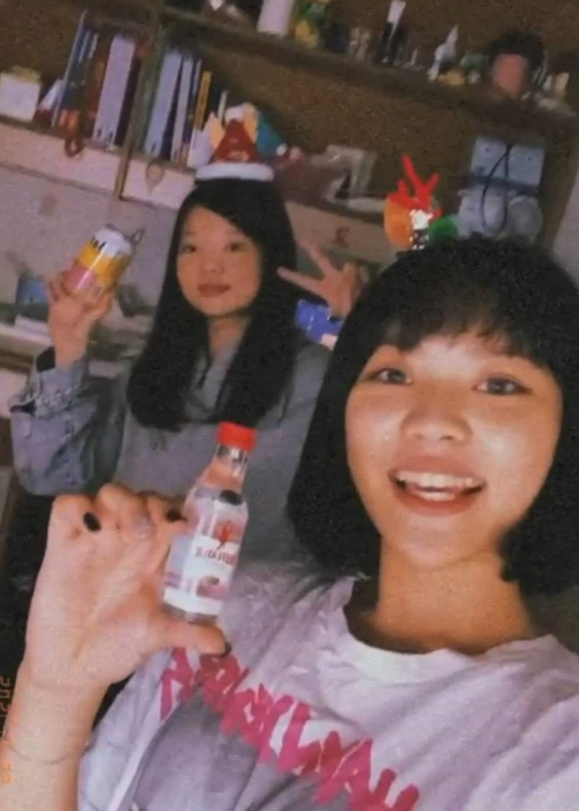
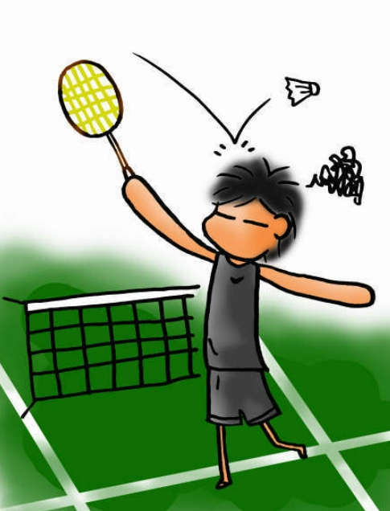

給比黑皮
說實話,其實我當初完全沒想過會去系羽,然後認識你,一開始冠妤叫我陪她去我也只是抱著隨便揮揮拍子的心態和有沒有時數XDD,原本一聽到沒有,就想說算了算了打LOL去啊哈哈哈哈´ω｀*
,到現在想說去運動,感覺也蠻好玩的,我很早就知道你是誰了,還有你的名子xd,林恭銘學長對吧~在去試打會之前,冠妤會跟我提到你問她要不要來之類的.
還蠻開心能夠認識你的,讓我發現其實學長都蠻熱情的ㄝ,我以為會像我直屬一樣有跟沒有沒兩樣.謝謝你願意當我直屬和願意花時間教我有關程式的東西•ﾟдﾟ•.
還蠻喜歡跟你聊天的,沒有那種差三年的隔閡,也沒有因為你是學長我需要有個警戒去說話,跟你說話都不會有不自在的感覺,也謝謝你在某些時候願意聽一些
我的想法以及我生活周遭所發生的事情,會鼓勵我安慰我開導我QQ.很開心你也願意分享你的故事,雖然你大四了,時間過得很快,你畢業後見的次數也少了,但還是要保持聯絡唷~
願你在新的一年能夠忘記過去所有不開心的,記得每一個開心的時刻.也願你除了在資工方面有好的發展外,找一個你自己真正喜歡的東西去做,在沒什麼事想做的時候,或是不太開心的時候,
它能使你的生活添點樂趣.阿無聊想被我蹉就來找我打遊戲呀,有甚麼事情也可以跟我說,雖然我覺得我不太會安慰別人開導別人,不過我可以當萬能垃圾桶,聽你傾訴,有些事情說出來心情會好很多,對吧?
阿對了,你說過,老天是公平的,你相信著,你一定會遇到一個更好的,能夠真正陪伴你的人的ouo.
阿呆學長▼￣⚇￣▼
笑死因為我沒有甚麼你的照片,我想說只有字太空虛,所以呢,我去翻你IG照片,發現你好呆˙˙,阿FB的就先免了,怕你害羞XD.

我發現你都用一些卡通圖片?一直吃一直喝然後就回不去了?XD


